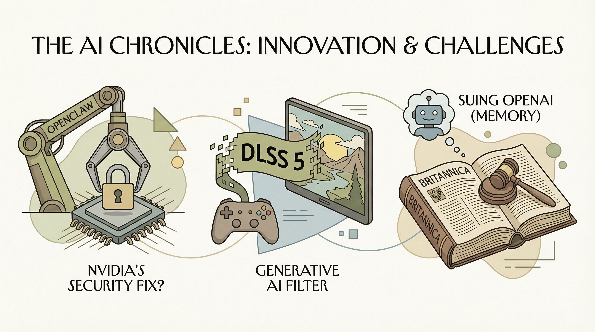

Nvidia发布基于OpenClaw的企业级AI平台NemoClaw，旨在解决安全问题。
两克伴AIGC日报
2026-03-17 星期二

本期关注：英伟达推出NemoClaw解决AI安全问题、DLSS 5引争议，成立Nemotron联盟推动开放前沿模型；LangChain基于NVIDIA推企业级智能体平台；大英百科起诉OpenAI侵权；罗che全球部署NVIDIA AI工厂加速药物发现与制造。
📰 行业动态
Nvidia发布DLSS 5，被视为图形领域的GPT时刻，引发争议。
Encyclopedia Britannica起诉OpenAI，指控其使用其内容训练ChatGPT。
Roche在全球范围内部署NVIDIA AI工厂，加速药物发现和制造突破。
🔥 今日焦点
LangChain近日宣布推出一款基于NVIDIA AI技术的企业级智能体工程平台。该平台旨在帮助企业构建、部署和监控大规模生产级AI智能体。LangChain作为LangSmith和开源框架的幕后公司，其产品已超过10亿次下载，此次推出的企业级智能体工程平台，标志着LangChain在AI领域的又一重要突破。
这一平台的核心优势在于其全面性，结合了NVIDIA AI技术的强大性能，使得企业能够轻松构建、部署和监控生产级AI智能体。这对于AI领域来说具有重要意义，它将推动AI技术在企业级应用中的普及和发展。
NVIDIA近日宣布成立Nemotron联盟，旨在推动开放前沿模型的进步。该联盟汇集了全球领先的AI实验室，包括Black Forest Labs、Cursor、LangChain、Mistral AI、Perplexity、Reflection AI、Sarvam和Thinking Machines Lab。联盟成员将结合各自专长，共同构建开放前沿模型。
此次联盟的核心内容涵盖多方面能力，如Black Forest Labs的多模态技术、Cursor提供的真实世界性能需求和评估数据集、LangChain在使AI代理具备可靠工具使用和长期推理能力方面的专长。此外，Mistral AI将贡献前沿模型开发能力，其高效可定制的模型提供全面控制。Perplexity则提供高性能的AI系统，Reflection AI致力于构建可信赖的AI系统。
近日，微软发布了一系列新型AI代理，旨在助力企业现代化转型。这些代理是顶级AI供应商推出的最新产品，标志着AI技术在企业应用领域的进一步拓展。
这一举措的核心在于，通过引入智能代理，企业能够实现自动化、智能化的运营管理。这些代理具备强大的数据处理和分析能力，能够帮助企业优化业务流程，提高工作效率。在当前数字化转型的大背景下，这一技术的应用具有重要意义。
📚 深度长文
本文深入探讨了编码代理的工作原理，为AI从业者提供了宝贵的见解。文章指出，编码代理作为一种软件工具，通过LLM（大型语言模型）的扩展，实现了额外的功能。核心观点是，理解编码代理的工作机制，有助于我们更好地应用它们。
文章以LLM为核心，阐述了其如何通过提供可见的提示和可调用的工具，实现不可见的提示功能。LLM如GPT-5.4、Claude Opus 4.6等，在完成句子、生成文本等方面表现出色。阅读本文，读者可以了解到LLM在编码代理中的关键作用，以及如何通过优化LLM来提升编码代理的性能。
本文探讨了OpenAI Codex中子代理和自定义代理的应用。文章指出，子代理已正式发布，与Claude Code的实现相似，包括“explorer”、“worker”和“default”等默认子代理。其中，“worker”子代理可能用于并行运行大量小型任务。此外，Codex允许用户通过TOML文件定义自定义代理，并指定使用特定模型，如“gpt-5.3-codex-spark”以实现更高的速度。自定义代理可按名称引用，为AI从业者提供了更灵活的代理使用方式。本文深入剖析了Codex子代理和自定义代理的特性和应用，为读者提供了宝贵的参考价值。
---
《超越幼儿阶段的AI代理培育》一文由Lynn Comp撰写，深入探讨了人工智能在成长过程中的关键阶段。文章核心观点指出，如同人类儿童在成长过程中需要经历一系列里程碑，人工智能的发展同样需要经历从初级到高级的各个阶段。作者通过对比人类儿童的学习过程，提出了AI代理在成长过程中可能面临的挑战，并强调了培育AI代理的重要性。
文章中，作者提出了几个关键论据。首先，作者指出，婴儿学习说话或走路的时间被广泛用作衡量健康和诊断潜在健康问题的标准。其次，作者强调了在AI代理的成长过程中，需要关注其认知、情感和社交能力的发展。此外，文章还探讨了如何通过模拟人类儿童的学习环境，为AI代理提供适宜的培育策略。
🛠️ 产品推荐
Show HN：Shhh是一款高效的个人隐私信息（PII）掩码工具，通过将真实信息替换为逼真的虚构内容，保持数据结构，让AI工具在不知情的情况下进行推理。它可封装AI工具，防止意外粘贴PII和机密信息。Shhh旨在保护用户数据安全，防止泄露，适用于技术从业者，特别强调其AI能力和创新点。目前仍在持续改进中，欢迎贡献。
---
Lens是一款基于AI的字体识别模型，能够从图像中识别并返回最接近的开源字体。该模型通过深度学习技术，实现了对图像中文字字体的精准识别，解决了传统字体识别技术难以准确识别字体文件的问题。Lens的推出，为用户提供了便捷的字体识别工具，提高了字体识别的准确性和效率，适用于设计、印刷、字体研究等领域。
---
AllMy Ledger是一款桌面版会计软件，支持一次性购买，无需云端服务。该产品专注于提供本地化、安全可靠的财务解决方案。它具备强大的账务管理功能，包括收入、支出、资产负债表等，满足用户日常财务管理需求。相较于传统会计软件，AllMy Ledger无需依赖云端，有效保护用户数据安全，且无需持续订阅费用。对于追求高效、安全、经济实惠的会计解决方案的技术从业者而言，AllMy Ledger是一款不可多得的选择。